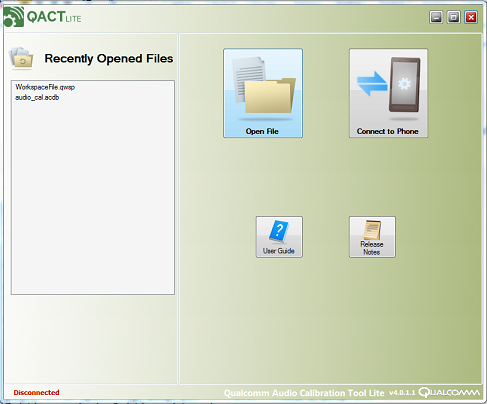
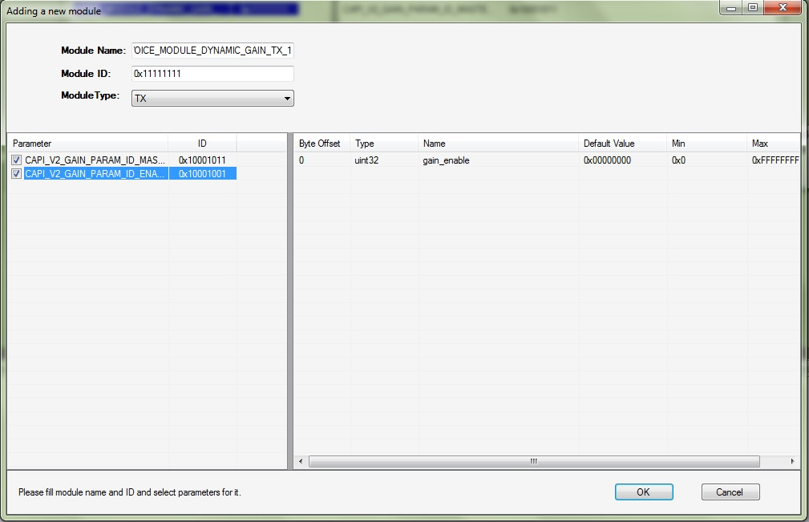
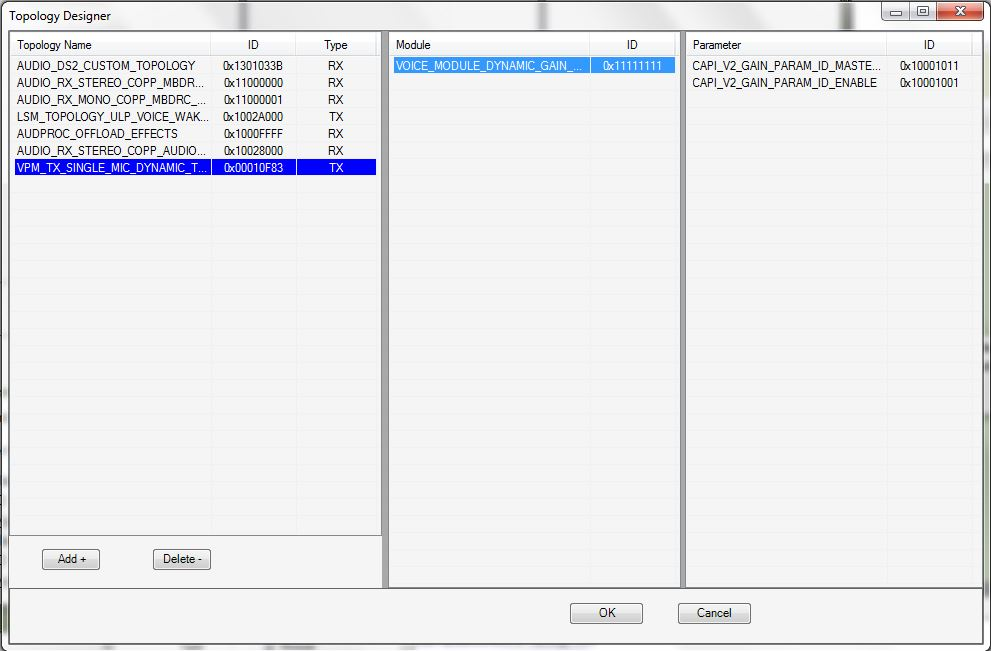
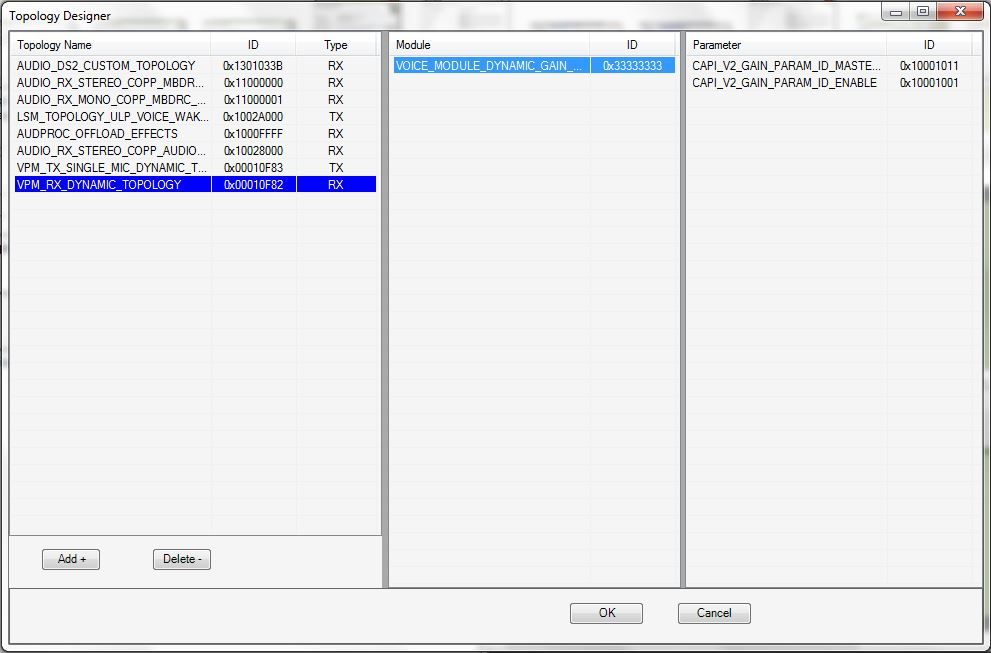
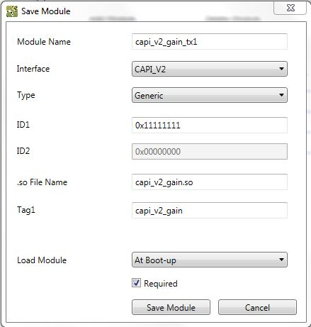
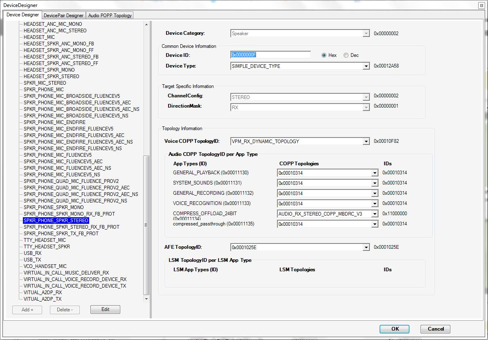
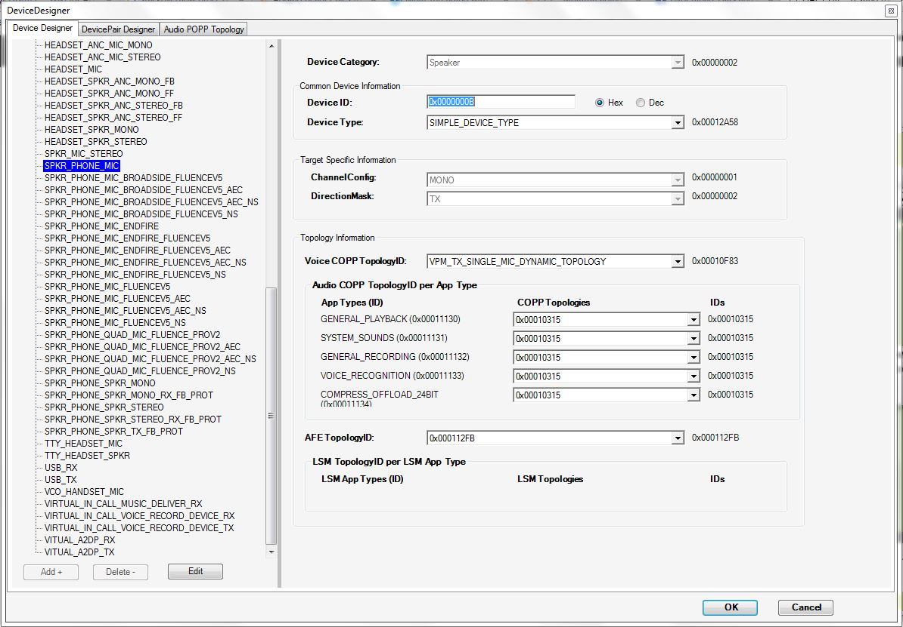

QACT Lite : Testing the Voice Module on Target
Overview
QACT (Qualcomm Audio Calibration Tool) Lite is a PC based tool that lets you modify the ACDB (Audio Calibration Database). ACDB is a set of binary files containing calibration data for all devices, networks and sample rates. The default set of acdb files can be found in the folder “/etc” on your target device.
To enable a custom voice module on target the module must be added to a new topology definition. These are the steps from a high level:
-
Setting up the workspace
-
Add custom topologies and associated modules
-
Associate topologies with devices
-
Save the workspace changes to ACDB
-
Replacing the ACDB on the Target Device
Prerequisites
-
Android Device
-
QACT Lite and QPST installed on system.
Please ../Support_Contact Qualcomm to obtain them. The User Guide shipped along with QACT will take you through the installation. You can refer section 2 of the document for more details
-
ADB drivers installed on system.
Setting up the workspace
-
Pull the existing acdb files from the target device. (Assuming 'C:\Work\ACDB' is the working directory)
adb pull /etc/Speaker_cal.acdb C:\Work\ACDB adb pull /etc/Headset_cal.acdb C:\Work\ACDB adb pull /etc/Handset_cal.acdb C:\Work\ACDB adb pull /etc/Hdmi_cal.acdb C:\Work\ACDB adb pull /etc/Global_cal.acdb C:\Work\ACDB adb pull /etc/General_cal.acdb C:\Work\ACDB adb pull /etc/Bluetooth_cal.acdb C:\Work\ACDB
NOTE: Few devices storing acdb files in /etc/acdbdata/<TargetType>/. Change the adb commands based on your device acdb files to push and pull.
-
Create a workspace file 'workspaceFile.qwsp' in the same folder. You can modify the existing qwsp file, if you are provided with one.
If creating new, a text file with contents as shown should suffice
<WorkSpace_Data WSVersID="Badger_3">
<ACDBFile_Paths>
<ACDBFile_Paths path="Bluetooth_cal.acdb" /> <ACDBFile_Paths path="General_cal.acdb" /> <ACDBFile_Paths path="Global_cal.acdb" /> <ACDBFile_Paths path="Handset_cal.acdb" /> <ACDBFile_Paths path="Hdmi_cal.acdb" /> <ACDBFile_Paths path="Headset_cal.acdb" /> <ACDBFile_Paths path="Speaker_cal.acdb" />
</ACDBFile_Paths> <GUI_Data> </GUI_Data>
</WorkSpace_Data>
-
Launch QACT Lite. Choose 'Open File' icon as shown.
 Browse to the location C:\Work\ACDB and choose the file workspaceFile.qwsp.
Now we are ready to modify the acdb for the custom requirement.
Add custom topologies and associated modules
Add custom topologies defined in voiceproc.json file in earlier steps to ACDB.
Open the workspace
Open the workspace created in the previous step (workspaceFile.qwsp)
Add parameters using “Parameter Designer”
-
Choose parameter designer: Tools -> Parameter Designer -> Add+
-
Add parameters of a module
As an example, Add parameters of CAPI_V2_GAIN module, refer <SDK_ROOT>\examples\voice\capi_v2_gain\inc\capi_v2_gain.h.
-
Enter the parameter name and parameter id
-
Parameter Name: CAPI_V2_GAIN_PARAM_ID_MASTER_GAIN
-
Parameter ID : 0x10001011
-
Click “OK”
-
Add information about the parameter (Gain value, data type, default value and etc.)
-
Name: master_gain
-
Type: uint16
-
Default vlaue: 0x3000
-
Click “Done”
-
Similarly add another parameter defined for gain module
-
Parameter Name: CAPI_V2_GAIN_PARAM_ID_ENABLE
-
Parameter ID : 0x10001001
-
Finally the parameter designer has two parameters as shown in the image below.
Create module using “Module Designer”
-
Choose module designer: Tools -> Module Designer -> Add+
-
Add modules
-
Add CAPI_V2_GAIN module
-
Module Name: VOICE_MODULE_DYNAMIC_GAIN_TX_1
-
Module ID : 0x11111111
-
Module Type: TX
-
 Select list of parameters applicable and Click “OK”
-
Module Name: VOICE_MODULE_DYNAMIC_GAIN_RX_1
-
Module ID : 0x33333333
-
Module Type: RX
-
Finally module designer now contains 2 modules (1 for TX and 1 for RX processing)
Create custom topology using “Topology Designer”
-
Choose topology designer: Tools -> Topology Designer -> Add+
-
Add custom topology
-
Create custom topologies
-
Topology Name: VPM_TX_SINGLE_MIC_DYNAMIC_TOPOLOGY
-
Topology ID : 0x00010F83
-
Topology Type: TX
-
 Select list of modules and click “OK”
-
Similarly add other topologies for TX and RX.
-
-
Topology Name: VPM_RX_DYNAMIC_TOPOLOGY
-
Topology ID : 0x00010F82
-
Topology Type: RX
 -
Add newly created topologies to database using “Database Designer”
-
Tools -> Database Designer
-
Add newly created TX and RX topologies to VOICE_COPP_TX and VOICE_COPP_RX respectively
Add Dynamic module using “DSP Module Manager”
Add the module information in DSP module manager. This is a new feature in QACT to allow addition of dynamic modules to AMDB(Audio Module Database).It allows addition of CAPIv2, CAPI as well as APPI modules to AMDB.
-
Select “DSP Module Manager” from the “Tools” menu.
-
Click on “Add Module” button.
-
Select the options for capi_v2_gain module for TX topology.
-
To add a custom shared object information, Tag1 should be the same as the tag specified as follows:
<tag>_get_static_properties
-
Example: capi_v2_gain_get_static_properties
<tag>_init
-
Example: capi_v2_gain_init
In this example, specify Tag1 as capi_v2_gain
-
-
Custom shared object can be loaded either at boot up or on demand based on the selection for Load Module.
-
If a custom module is not required in a specific product, the module can be marked as not required (optional).
-
-
Similarly add the other modules to AMDB.

NOTE: For capi_v2_dummy_ecns example, single example overloads Single Mic(SM), Dual Mic(DM) and Quad Mic(QM) dummy ECNS modules.
For Single Mic, specify Tag1 as capi_v2_custom_dummy_sm_ecns
For Dual Mic, specify Tag1 as capi_v2_custom_dummy_dm_ecns
For Quad Mic, specify Tag1 as capi_v2_custom_dummy_qm_ecns
Associate topologies with devices
-
Associate voice topologies with device using “Device designer” Tools -> Device Designer
-
Associate the topologies to specific devices where voip call will be made
 
NOTE: Settings for capi_v2_dummy_ecns example:
-
In Device Designer,choose
For single mic, use device SPKR_PHONE_MIC For dual mic, use device SPKR_PHONE_MIC_ENDFIRE_FLUENCEV5 For quald mic, use device SPKR_PHONE_QUAD_MIC_FLUENCE_PROV2
-
To enable fluence property on the platform for dummy ecns, following are the steps:
adb root adb remount adb pull /system/build.prop
-
Change the value of the property in build.prop: For dual: “fluence”; for quad: fluencepro“.
ro.qc.sdk.audio.fluencetype=fluence
-
Push the file on target.
adb push build.prop /system/ adb shell chmod 644 /system/build.prop adb reboot
Save the workspace changes to ACDB
Choose “Save As” from “File” menu.
A window will pop up where you can browse to the folder to save all the acdb files and workspace file. For the workspace file, browse to your desired location. The same location will be picked up for all other files.
Assuming you have saved all the files in C:\WORK\ACDB\GAIN_ADDED
Replacing the ACDB on the Target Device
Now that we are done with modifying the ACDB, it's time to push the files to Target. Assuming the saved acdb files are kept at C:\WORK\ACDB\GAIN_ADDED. Issue the following commands from the folder in a CLI shell.
adb push Speaker_cal.acdb /etc/acdbdata/MTP adb push Headset_cal.acdb /etc/acdbdata/MTP adb push Handset_cal.acdb /etc/acdbdata/MTP adb push Hdmi_cal.acdb /etc/acdbdata/MTP adb push Global_cal.acdb /etc/acdbdata/MTP adb push General_cal.acdb /etc/acdbdata/MTP adb push Bluetooth_cal.acdb /etc/acdbdata/MTP adb push adsp_avs_config.acdb /etc/acdbdata/
Reboot the device.
NOTE: Few devices storing acdb files in /etc/acdbdata/<TargetType>/. Change the adb commands based on your device acdb files to push and pull.
Copyright © 2018 Qualcomm Technologies Inc. All rights reserved.